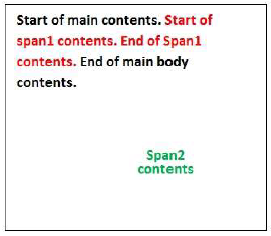
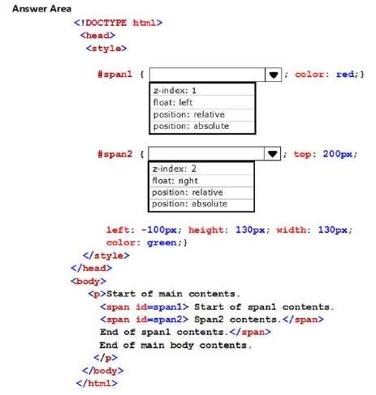

HOTSPOT
You develop a webpage.
The layout of the webpage must resemble the following image:
You need to ensure that the page renders properly.

How should you complete the relevant CSS styles?
To answer, select the appropriate options in the answer area.
NOTE: Each correct selection is worth one point.

DEMOSTRACIÓN
Start of main contents.
Start of span1 contents.
Span2 contents.
End of span 1 Contents.
End of main body contents.
SPAN1:
SPAN2:
***********************
Correct Answer:
1. position: relative
2. position: absolute
***********************
Section: Volume C
Explanation
* position: relative
The element is positioned relative to its normal position, so "left:20" adds 20 pixels to the element's LEFT
position
* position: absolute
The element is positioned relative to its first positioned (not static) ancestor element
Reference: https://www.w3schools.com/cssref/pr_class_position.asp